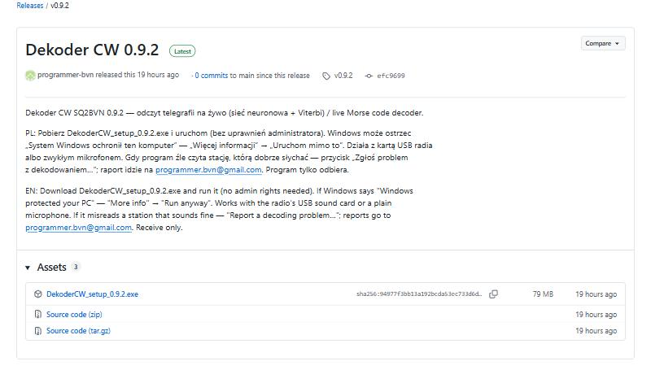
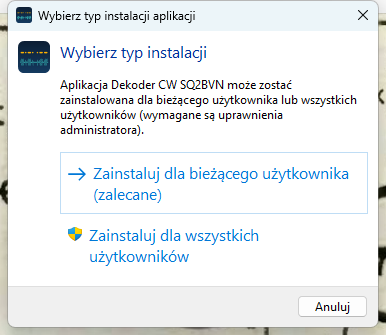
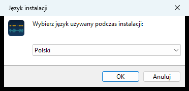
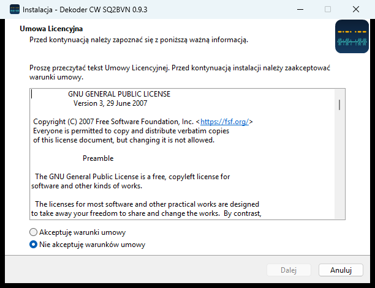
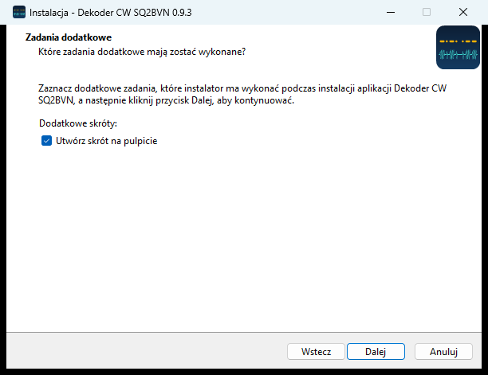
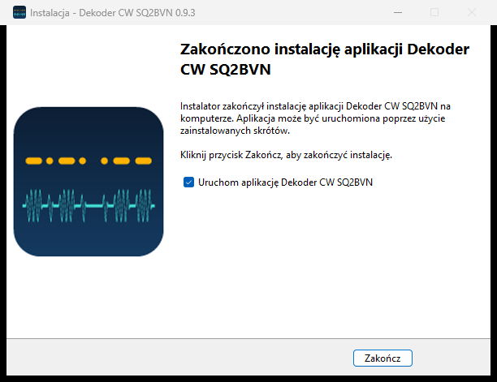
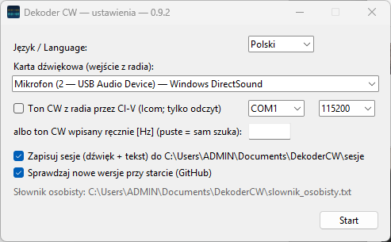
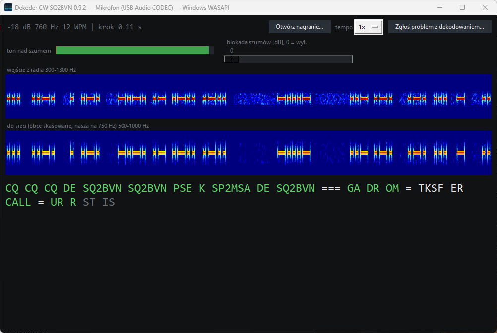
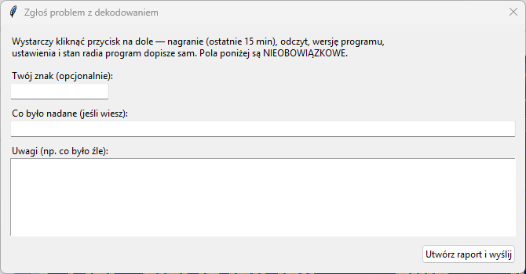
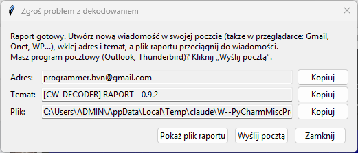

| Język / Language | Polski albo English. |
| Karta dźwiękowa | Wybierz wejście, na które idzie dźwięk z radia. Radio z kablem USB: zwykle „USB Audio … WASAPI”. Mikrofon: „Mikrofon …”. Nie wiesz która? Wybierz, kliknij Start i patrz na górny wodospad (punkt 4) — przy dobrej karcie widać na nim sygnał z radia. Jeśli pusto, zamknij program i wybierz inną. |
| Ton CW z radia przez CI-V | Tylko radia Icom z kablem CI-V/USB: zaznacz i wybierz port COM. Inne radia: zostaw puste. |
| Ton CW wpisany ręcznie | Wysokość tonu CW ustawiona w radiu („CW pitch”), np. 600. Nie wiesz — zostaw puste, program sam znajdzie stację. |
| Zapisuj sesje | Zostaw zaznaczone — dzięki temu można zgłosić problem z nagraniem. |
Kliknij Start. Program zapamięta ustawienia — następnym razem wystarczy Start.

| Górny pasek | Poziom dźwięku, ton stacji, tempo (WPM). Przyciski: Otwórz nagranie…, Zgłoś problem z dekodowaniem… |
| „ton nad szumem” | Zielony pasek: jak mocno stacja wystaje ponad szum. |
| Suwak „blokada szumów” | Gdy w przerwach pojawiają się same E, I, T (szum czytany jako kropki) — przesuń w prawo (przy silnej stacji 15-20). Przy słabej stacji trzymaj nisko (0 = wyłączona). |
| Górny wodospad | Dźwięk z radia — kreski i kropki to nadawanie. |
| Dolny wodospad | To samo po oczyszczeniu: inne stacje usunięte, odbierana stacja na środku. |
| Tekst | Jasny — odczyt pewny. Szary — odczyt wstępny, może się jeszcze zmienić. Zielony — znane słowo, znak wywoławczy albo raport RST. |
Gdy program źle czyta stację, którą dobrze słychać, kliknij Zgłoś problem z dekodowaniem…. Nic nie trzeba wpisywać — pola są nieobowiązkowe. Można dopisać swój znak i co było nadane.

Kliknij Utwórz raport i wyślij. Pojawi się okno wysyłki:

Adres: programmer.bvn@gmail.com. Każde zgłoszenie jest analizowane — dostaniesz odpowiedź, co było przyczyną.
| Nie pojawiają się żadne litery | Inna karta dźwiękowa (punkt 3) albo za cicho — podgłośnij radio lub wyjście audio. Na górnym wodospadzie musi być widać sygnał. |
| Dużo pojedynczych E, I, T | Szum albo rozmowa w pokoju (mikrofon) czytane jako kropki — przesuń suwak blokady szumów w prawo. |
| Zła stacja | Dostrój radio tak, żeby odbierana stacja była jedyna albo najmocniejsza; wpisz ton CW w ustawieniach. |
| Program się nie uruchamia | Przyślij plik Dokumenty\DekoderCW\dziennik.txt na programmer.bvn@gmail.com. |
Pliki programu: Dokumenty\DekoderCW — sesje (nagrania), raporty, slownik_osobisty.txt (Twoje słowa na zielono: imię, QTH, znajomi). Kod źródłowy (GPL-3.0): github.com/programmer-bvn/cw-decoder-dsp. 73, SQ2BVN.